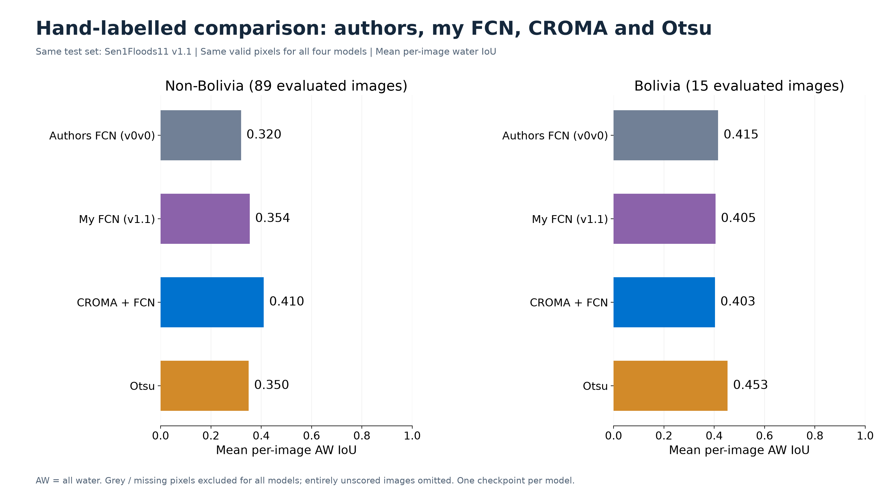
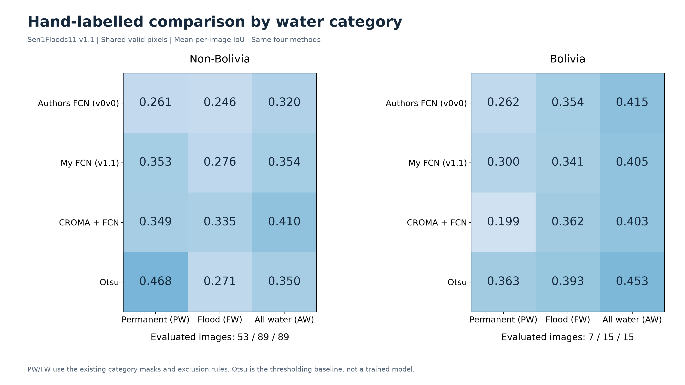
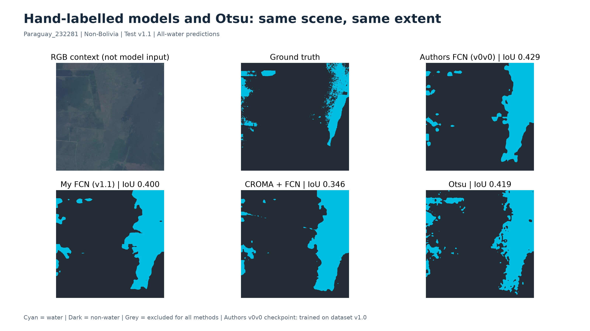
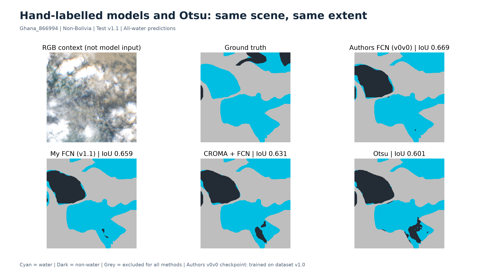
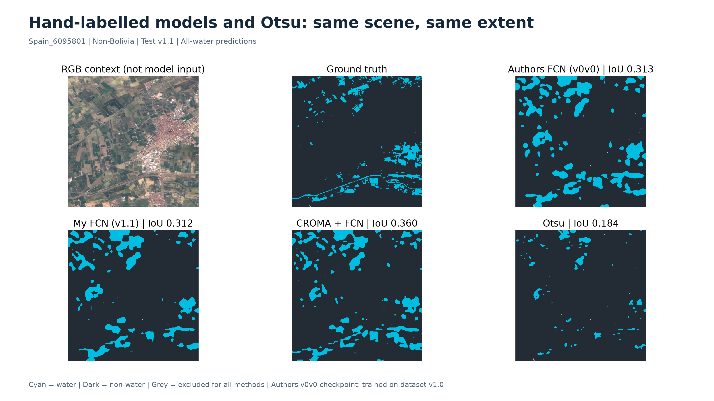
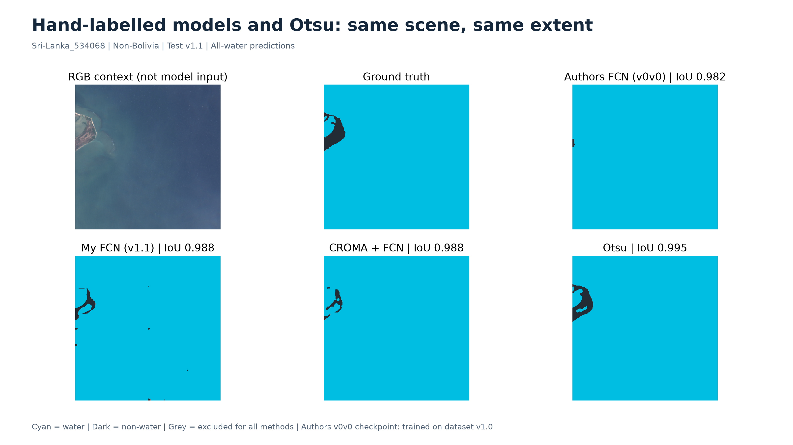
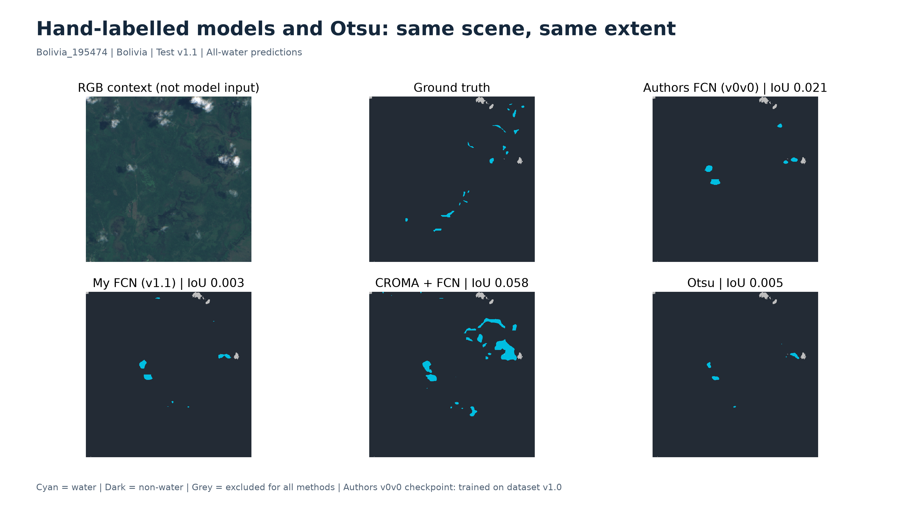
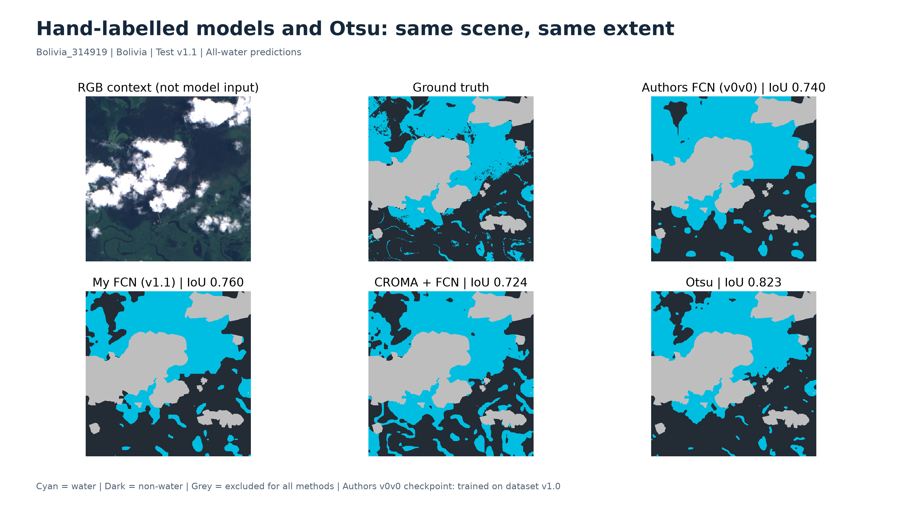
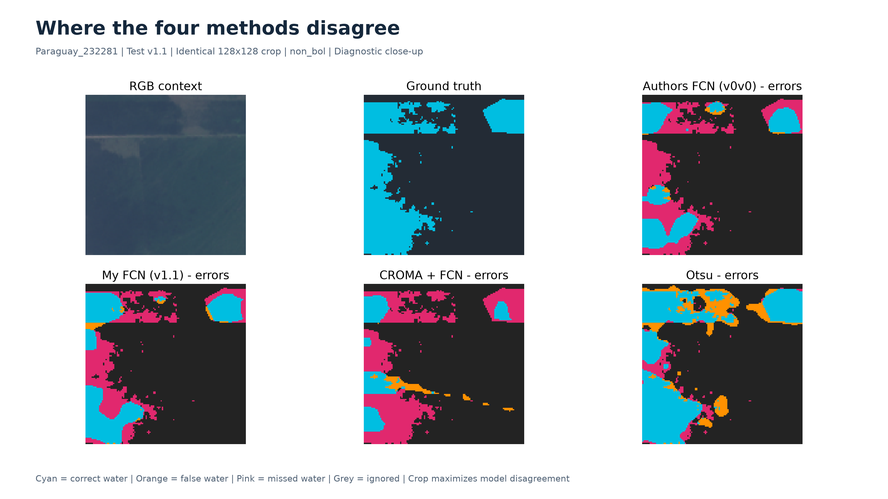
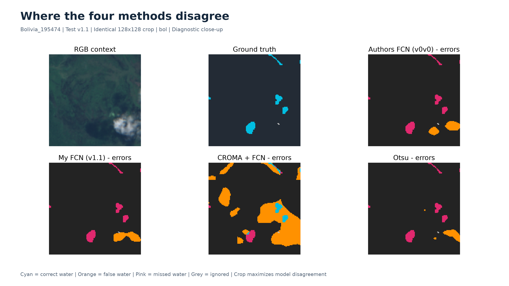

Only the four requested methods. Same v1.1 test images and valid pixels.

Exactly four methods. Shared valid pixels exclude Otsu missing predictions for all models. This is not the legacy notebook label-conversion metric; native-mask scores are also available in summary.csv.

PW, FW and AW evaluated with the same valid-pixel mask for the four methods; different categories have different eligible images.

Full 512x512 scene Paraguay_232281. Only the four requested methods. RGB is contextual; models use SAR.

Full 512x512 scene Ghana_866994. Only the four requested methods. RGB is contextual; models use SAR.

Full 512x512 scene Spain_6095801. Only the four requested methods. RGB is contextual; models use SAR.

Full 512x512 scene Sri-Lanka_534068. Only the four requested methods. RGB is contextual; models use SAR.

Full 512x512 scene Bolivia_195474. Only the four requested methods. RGB is contextual; models use SAR.

Full 512x512 scene Bolivia_314919. Only the four requested methods. RGB is contextual; models use SAR.

Four-method error comparison in one common crop. Diagnostic disagreement crop, not a representative performance estimate.

Four-method error comparison in one common crop. Diagnostic disagreement crop, not a representative performance estimate.